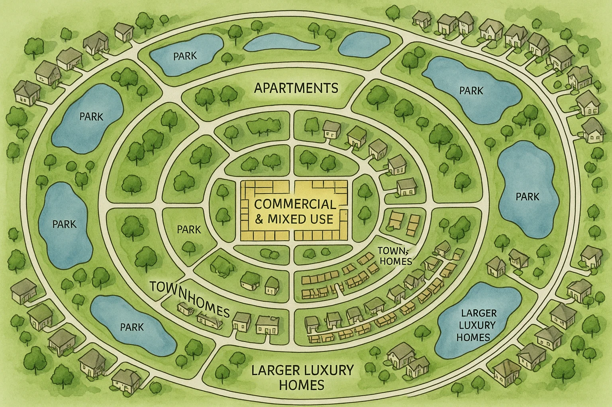

Everything you need at a walking distance
Everything Naawi Oodena residents need on a daily basis is just a short walk from home.
At the heart of the community on Grant Avenue are grocery stores,
cafes, restaurant and street-level publicly accessible plazas, with homes above.
From this hub, housing steps down from mid rise apartments to townhouses and, finally, to bigger homes and parks on the edges.
This design keeps shops and services close to access.

Map Of Naawi-Oodena Layout
Naawi-Oodena Is structured around A ring road (like perimeter highway)This model Situates higher density Locations such as Retail and comercial use at the center and Bigger houses and parks on the outskirts of the Community.
This enables for better accesibility to the major amenities while keeping a spacious village like design.